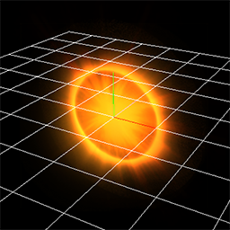
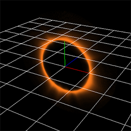
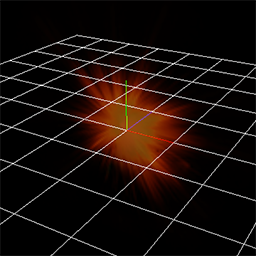
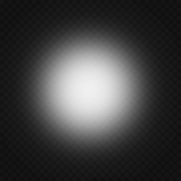

09.Let's create muzzle flash!¶
Overview¶
In this chapter, I create the effect of muzzle flash using knowledge you have learned so far. Muzzle flash is the fire that emerges at the tip when shooting a gun. In game with shooting, muzzle flash is essential.
Muzzle flash
Muzzle flash¶
I analyze the structure of muzzle flash. The muzzle flash created in this chapter is roughly divided into three parts. These are flash, spark and smoke.
|

Flash |

Spark |

Smoke |
If you create complicated effects, it is important to think about each part separately. In this chapter, I explain how to create each part.
We made it possible to download the effect created in advance from the link below.
Flash¶
Flash is represented by three kinds of sprites. I regard Z direction as the direction in which the bullet moves. There are two filash spreading in the XY direction and one type spreading in all directions on the condition.
Sprites spreading in the X and Y directions are represented by sprites whose Configuration is Fixed.
To enrich the expression, I prepare a sprite that expands and disappears and a sprite that shrinks and disappears.
Since they are only shown for a moment, I make them disappear in about 20 frames.
I make a sprite spreading in all directions enlarge and disappear.
The images used and particles are as follows.
The parameters described in the previous chapters, such as fade-in, fade-out, and Color All, have also been changed.
Because there are many parameters to change, these parameters have already been changed in the sample.
|

Flash1 |

Flash2 |

Flash3 |

Flash1 |

Flash2 |

Flash3 |
The flash effect looks like the image below.
Flash
Spark¶
Spark is represented by multiple sprites with round image. However, I use parent-child relationship to specify the sparking direction.
Make sure the sparks are circularly arranged with the Z direction as the axis.
To place it in a circle, specify Circle for Spawning method of the parent node.
Check Set angle on spawn so that the sparks face the outside of the circle.
Then, for the child particles to move in the direction of bullet movement, Move in the Z direction, move to the outside to move in the Y direction.
Then, when the child particle moves in the Y direction, it become to the outside of the circle.

Spawning method and parent-child relationship
In addition to that, rotate the parent node around the Z direction. Then, when the child particle moves in the Y direction, the particle moves in the direction where the bullet moves.

Spawning method and parent-child relationship
The shape of the child's particle is long at the beginning and short at the end. This behavior is realized by moving and scale's easing.
Behavior of child particles is described in the previous chapter, so these parameters have already been changed in the sample.
The parameters of the parent node are as follows.
| Window | Value type | Value |
|---|---|---|
| Basic Settings | Name | SparkEmitter |
| Basic Settings | Spawn Count | 16 |
| Basic Settings | Time to live | 30 |
| Basic Settings | Spawn Rate | 0.01 |
| Rotation | Rotation Method | PVA |
| Rotation | Angle(Mean) | x=55, y=0, z=0 |
| Rotation | Angle(Deviation) | x=10, y=0, z=0 |
| Spawning method | Set angle on spawn | On |
| Spawning method | Spawning method | Circle |
| Spawning method | Verticies | 32 |
| Spawning method | Radius(Mean) | 0.5 |
| Render Settings | None |
The spark effect looks like the image below.
Spark
Smoke¶
Smoke is represented by multiple sprites with smoke images.
The smoke is moved as it moves in the Z direction and head slightly upwards.
The image of smoke consists of 4 images.
By changing the image each time a certain period of time elapses, smoke appears to be changing.
To make images switch, make UV Animation.
Smoke image
Behavior of particles is described in the previous chapter, so almost parameters have already been changed in the sample.
UV only setting is not done.
Also, Visibility is disabled. Please enable it when editing.
UV parameters are as follows.
| Window | Value type | Value |
|---|---|---|
| Basic Render Settings | UV | Animation |
| Basic Render Settings | Size | 256,256 |
| Basic Render Settings | Frame Length | 10 |
| Basic Render Settings | X-Count | 2 |
| Basic Render Settings | Y-Count | 2 |
The smoke effect looks like the image below.
Smoke
Integration¶
I displayed three parts at the same time. Effect of muzzle flash was created.

muzzle flash
Finally, I made it possible to download the effect created in this chapter.
Summery¶
In this chapter, I created effects that are likely to actually be used in games.